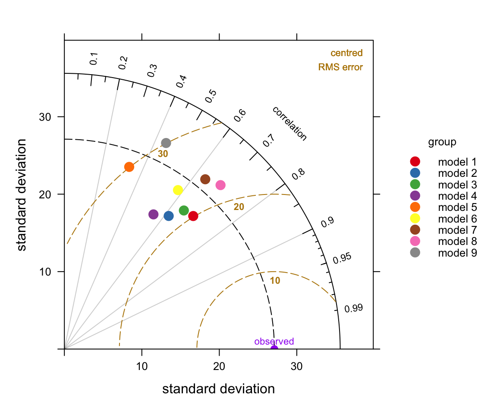
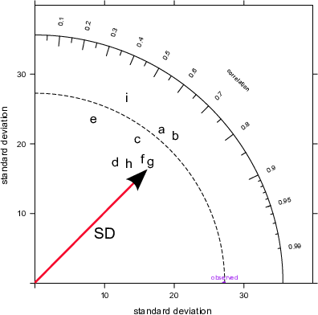
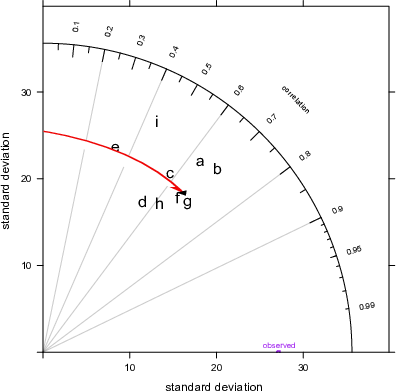
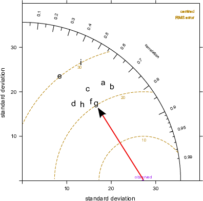
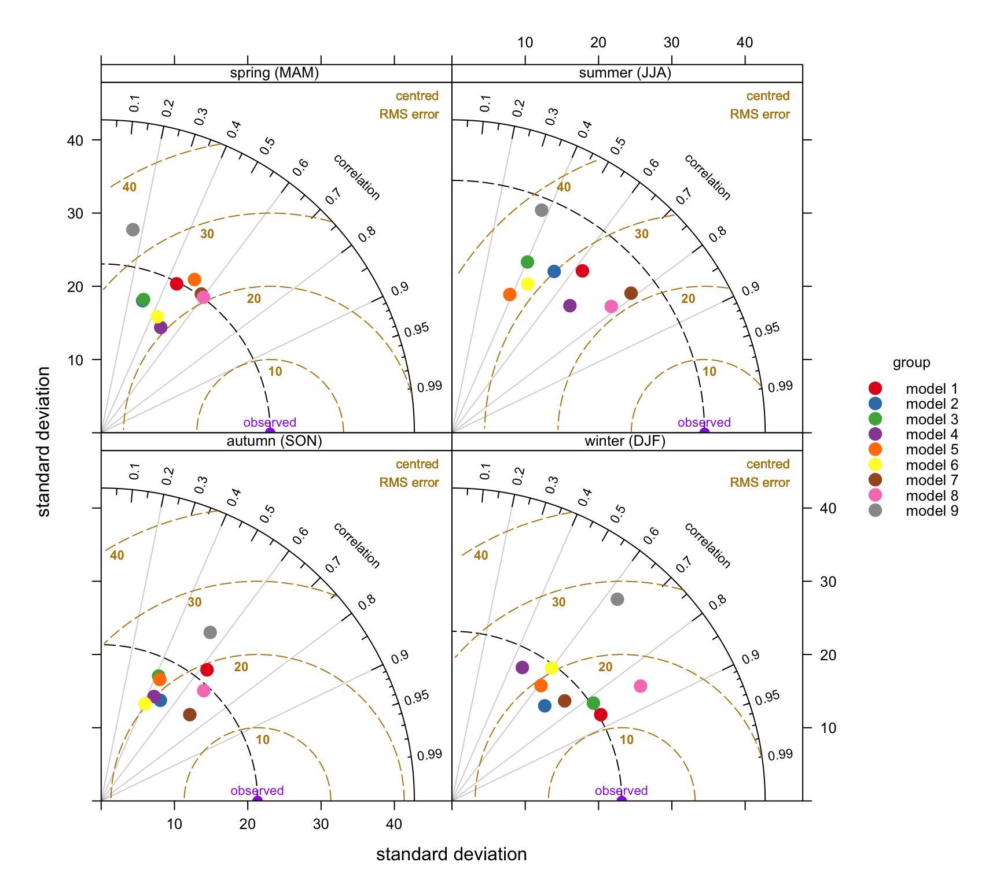
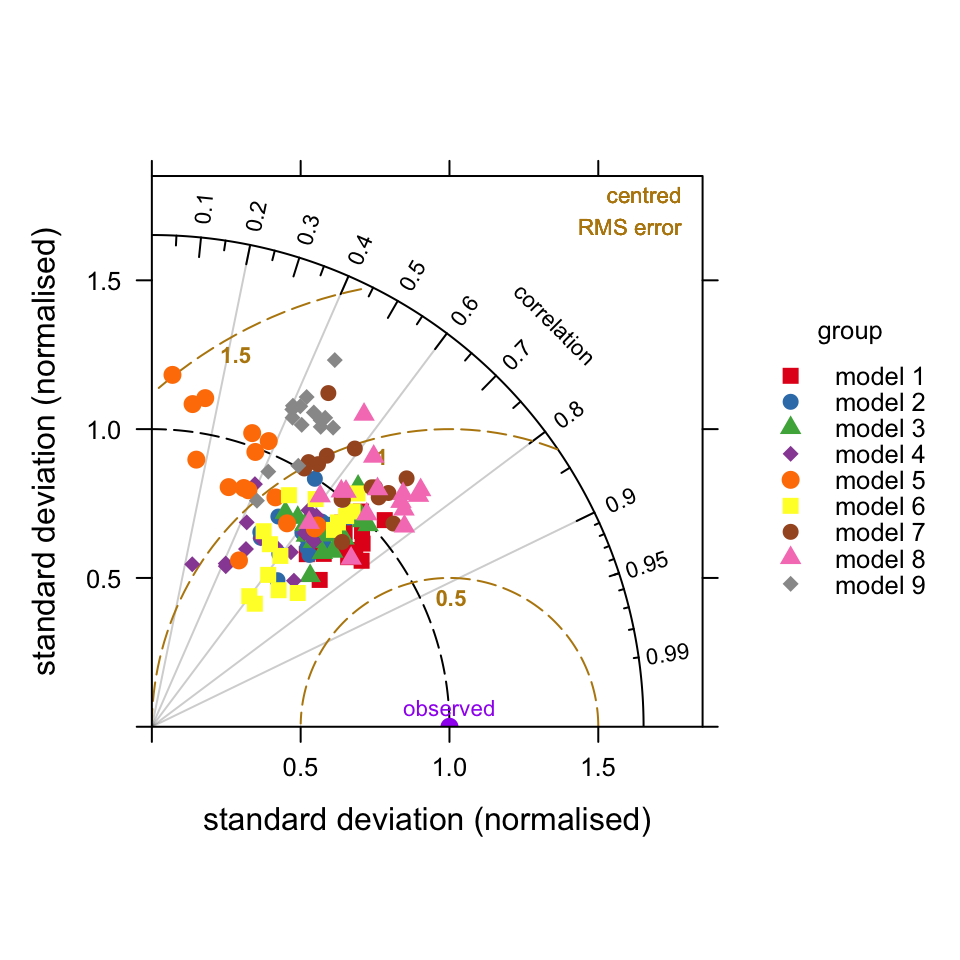

19 Taylor Diagam
19.1 Background
The Taylor Diagram is one of the more useful methods for evaluating model performance. Details of the diagram can be found at http://www-pcmdi.llnl.gov/about/staff/Taylor/CV/Taylor_diagram_primer.pdf and in Taylor (2001). The diagram provides a way of showing how three complementary model performance statistics vary simultaneously. These statistics are the correlation coefficient R, the standard deviation (sigma) and the (centred) root-mean-square error. These three statistics can be plotted on one (2D) graph because of the way they are related to one another which can be represented through the Law of Cosines.
The openair version of the Taylor Diagram has several enhancements that increase its flexibility. In particular, the straightforward way of producing conditioning plots should prove valuable under many circumstances (using the type option). Many examples of Taylor Diagrams focus on model-observation comparisons for several models using all the available data. However, more insight can be gained into model performance by partitioning the data in various ways e.g. by season, daylight/nighttime, day of the week, by levels of a numeric variable e.g. wind speed or by land-use type etc.
We first show a diagram and then pick apart the different components to understand how to interpret it. The diagram can look overly complex but once it is understood how to interpret the three main characteristics it becomes much easier to understand. A typical diagram is shown in Figure 19.1 for nine anonymised models used for predicting hourly O3 concentrations at 15 sites around the UK.
site date o3 mod group
1 Aston.Hill 2006-01-01 00:00:00 NA NA model 1
2 Aston.Hill 2006-01-01 01:00:00 74 65.28 model 1
3 Aston.Hill 2006-01-01 02:00:00 72 64.64 model 1
4 Aston.Hill 2006-01-01 03:00:00 72 64.46 model 1
5 Aston.Hill 2006-01-01 04:00:00 70 64.88 model 1
6 Aston.Hill 2006-01-01 05:00:00 66 65.80 model 1TaylorDiagram(modTest,
obs = "o3",
mod = "mod",
group = "group")
TaylorDiagram function.The plots shown in Figure 19.2 break the Taylor Diagrams into three components to aid interpretation. The first plot (top left) highlights the comparison of variability in for each model compared with the measurements. The variability is represented by the standard deviation of the observed and modelled values. The plot shows that the observed variability (given by the standard deviation) is about 27 (μg m-3) and is marked as ‘observed’ on the x-axis. The magnitude of the variability is measured as the radial distance from the origin of the plot (the red line with the arrow shows the standard deviation for model \(g\), which is about 25~μg m-3). To aid interpretation the radial dashed line is shown from the ‘observed’ point. Each model is shown in this case by the position of the letters a to i. On this basis it can be seen that models 1, \(a\), \(b\) have more variability than the measurements (because they extend beyond the dashed line), whereas the others have less variability than the measurements. Models \(a\) and \(b\) are also closed to the dashed line and therefore have the closest variability compared with the observations.
The next statistic to consider is the correlation coefficient, \(R\) shown by the top-right Figure in Figure 19.2. This is shown on the arc and points that lie closest to the x-axis have the highest correlation. The grey lines help to show this specific correlation coefficients. The red arc shows \(R\)=0.7 for model \(g\). The best performing models with the highest \(R\) are models \(b\) and \(g\) with correlation coefficients around 0.7. Two models stand out as having much worse correlations with the observations: models \(e\) and \(i\) (values of around 0.4).
Finally, the lower plot in Figure 19.2 highlights the centred root-mean square error (RMS). It is centred because the mean values of the data (observations and predictions) are subtracted first. The concentric dashed lines emanating from the `observed’ point show the value of the RMS error — so points furthest from the ‘observed’ value are the worst performing models because they have the highest RMS errors. On this basis, model \(g\) has the lowest error of about 20~μg m-3, shown again by the red line. Models \(e\) and \(i\) are considerably worse because they have RMS errors of around 30 μg m-3.
So which model is best? Taken as a whole it is probably model \(g\) because it has reasonably similar variability compared with the observations, the highest correlation and the least RMS error. However, models \(f\) and \(b\) also look to be good. Perhaps it is easier to conclude that models \(e\) and \(i\) are not good .
Note that in cases where there is a column site it makes sense to use type = "site" to ensure that the statistics are calculated on a per site basis and each panel represents a single site.



19.2 Examples of Taylor Diagrams
The example used here carries on from the previous section using data from a Defra model evaluation exercise. As mentioned previously, the use of the type option offers enormous flexibility for comparing models. However, we will only focus on the seasonal evaluation of the models. In the call below, group is the column that identified the model and type is the conditioning variable that produces in this case four panels — one for each season. Note that in this case we focus on a single site.
## select a single site
LH <- filter(modTest, site == "Lullington.Heath")
TaylorDiagram(LH, obs = "o3", mod = "mod",
group = "group", type = "season")
TaylorDiagam function to show model performance for 9 models used to predict O3 concentrations at the Lullington Heath site.Figure 19.3 contains a lot of useful information. Consider the summer comparison first. All models tend to underestimate the variability of O3 concentrations because they all lies within the black dashed line. However, models 7 and 9 are close to the observed variability. The general underestimate of the variability for summer conditions might reflect that the models do not adequately capture regional O3 episodes when concentrations are high. Models 7 and 8 do best in terms of high correlation with the measurements (around 0.8) and lowest RMS error (around 20–22 μg m-3). Models 3, 5 and 6 tend to do worse on all three statistics during the summer.
By contrast, during wintertime conditions models 1 and 3 are clearly best. From an evaluation perspective it would be useful to understand why some models are better for wintertime conditions and others better in summer and this is clearly something that could be investigated further.
There are many other useful comparisons that can be undertaken easily. A few of these are shown below, but not plotted.
## by receptor comparison
TaylorDiagram(modTest, obs = "o3", mod = "mod",
group = "group", type = "site")
## by month comparison for a SINGLE site
TaylorDiagram(subset(modTest, site == "Harwell"),
obs = "o3", mod = "mod",
group = "group", type = "month")
## By season AND daylight/nighttime
TaylorDiagram(subset(modTest, site == "Harwell"),
obs = "o3", mod = "mod",
group = "group",
type = c("season", "daylight"))It is also possible to combine different groups of model results. For example, rather than plot how the models perform at a single site it can be useful to show how they compare at all sites. To do this it is necessary to normalise the data because there will be different values of the observed variable across different sites. In this case we can supply the option group = c("group", "site"). This will show the variation by model for all sites. The results are shown in Figure 19.4. These results show that in general models tend to predict in similarly good (or bad) ways across all sites as shown by the grouping of points on Figure 19.4.
TaylorDiagram(modTest, obs = "o3", mod = "mod",
group = c("group", "site"),
normalise = TRUE, cex = 1,
pch = c(15:19, 15:18))
TaylorDiagam function to show model performance for 9 models used for all sites.